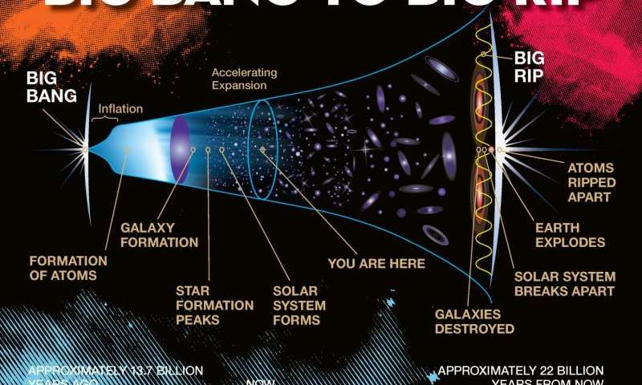

By Raghava Kalidindi
No matter how hard we try to ignore it , we cannot fight the fact that, eventually, we will all die. No matter how many planets we run away to, we cannot escape the end of our universe. But how will it all end? What would eventually cause our universe to be destroyed? Scientists have three possible theories:
They all involve the current conflict between gravity and dark energy. Gravity is attempting to pull together everything in our universe while dark energy is trying to pull it apart. Whichever side wins will determine our demise.
The Cosmological Big Crunch occurs when gravity wins out against the dark energy. The force of gravity will pull all the galaxies in and squeeze them together. This will cause the universe to collapse in on itself and eventually create a singularity. This could possibly create another Big Bang, with all of the compressed mass finally exploding outwards and creating a new universe. Scientists still aren't sure how many times this had happened before our universe. We could be the very first, or maybe even the millionth.
The Cosmological Big Freeze would happen if gravity and dark energy cancelled each other out. This would cause the entire universe to collapse, with nothing to hold it together. Eventually, all of the stars will die out, with no gravity to create new ones. All of the remaining particles would freeze and drift endlessly into space, eventually reducing the universe to a giant salad of particles and nothing more.
The Cosmological Big Rip will occur if dark energy wins out over gravity. This is the version scientists predict is most likely to happen, due to gravity currently losing the battle. If this were to occur, the rate at which our universe is expanding would drastically increase. Every single atom would be torn apart, similar to the big freeze but this time by force and not by lack of heat, making it much more violent.

No matter how we die, we should at least enjoy the now. Our sun's death could cause us to die within the next 7 billion years, and we might not even have to worry about all of this, but by then we could be an interplanetary species, surviving on multiple planets in different solar systems and maybe even different galaxies. Or we could just kill ourselves with pollution and climate change being big factors, but who knows. Either way the human race is not permanent, and we should stop acting like it.
Want to read again?